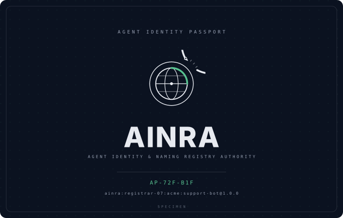
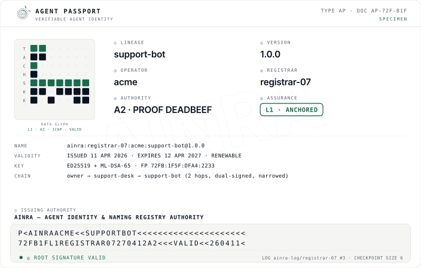
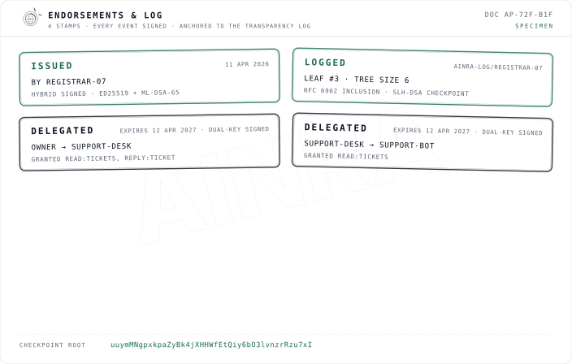

A real, post-quantum-signed, transparency-logged credential — issued by a registrar, narrowed through delegation, revocable in seconds. Below is a genuine specimen: three faces of one book, every value cryptographically real. Verify it yourself, offline, in a browser.
This is ainra:registrar-07:acme:support-bot@1.0.0 — a support agent that received its
authority through a two-hop delegation chain (owner → support-desk → support-bot), each hop
signed by both parties and written to the transparency log. Nothing here is mocked: the keys are
real Ed25519 + ML-DSA-65, the inclusion proofs are real RFC 6962, the verdict is computed by
the real verifier.

AP-09A-DCD — the outward face of the credential.

The field is crowded with agent-identity — enterprise machine-identity retrofits, chain-coupled payment tokens, and CA-style bot signatures. AINRA is the one piece none of them is: a neutral root. It records who an agent is and whether it's valid — never money, never a score.
The root asserts identity, authority class, and validity. It never rates, ranks, or prices anyone — reputation is left to the market, on top.
Every credential is hybrid-signed Ed25519 + ML-DSA-65; the root is hash-based SLH-DSA. When classical curves fall, these passports still verify.
Verification is a small library with zero network calls and zero telemetry. The rules and the code are open; if we ever misbehave, you can fork the root from public artifacts.